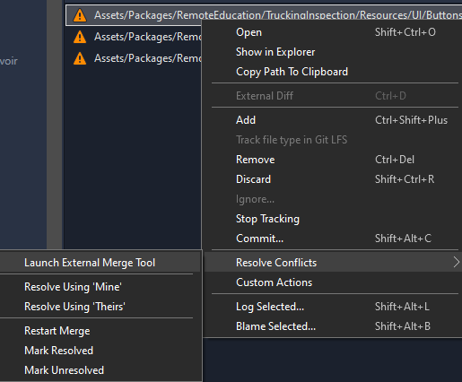

Created by Jordan Robinson, last modified by David Inglis on Nov 02, 2022
In this article we’ll cover how to set up Unity’s YAML Merge tool that is bundled with the Unity Editor for use in Sourcetree.
Each installation of the Unity Editor comes with an executable that’s used by the Perforce/PlasticSCM plugins to help with prefab and scene merge conflicts. Luckily for us we can also manually set up this exe to run as our external merge tool in Sourcetree.
First we need to find the merge tool and all the files we’ll need to edit. These are located in C:\Program Files\Unity\Hub\Editor\2020.3.2f1\Editor\Data\Tools on Windows 10 by default. If the VARLab moves to a different Unity version, you will have to look there instead of in the 2020.3.2f1 folder.
Editing mergespecfile.txt
In the tools folder we just opened, find mergespecfile.txt, open it up, and replace the file contents with the ones below in the expandable section.
 File Contents
File Contents
#
# UnityYAMLMerge fallback file
#
# Modify the next two lines if scene or prefab files should fallback
# on other that the default fallbacks listed below.
#
# %l is replaced with the path of you local version
# %r is replaced with the path of the incoming remote version
# %b is replaced with the common base version
# %d is replaced with a path where the result should be written to
# On Windows %programs% is replaced with "C:\Program Files" and "C:\Program Files (x86)" there by resulting in two entries to try out
# On OSX %programs% is replaced with "/Applications" and "$HOME/Applications" thereby resulting in two entries to try out
unity use "%programs%\Meld\meld.exe" "%r" "%l" "%b" -o "%d" --auto-merge
prefab use "%programs%\Meld\meld.exe" "%r" "%l" "%b" -o "%d" --auto-merge
#
# Default fallbacks for unknown files. First tool found is used
#
* use "%programs%\Meld\meld.exe" "%r" "%l" "%b" -o "%d" --auto-merge
# Apple File Merge
* use "/usr/bin/opendiff" %r %l -ancestor %b -merge %d
# Beyond Compare
* use "%programs%\Beyond Compare 4\bcomp.exe" "%r" "%l" "%b" "%d"
* use "%programs%\Beyond Compare 3\bcomp.exe" "%r" "%l" "%b" "%d"
* use "%programs%/Beyond Compare.app/Contents/MacOS/bcomp" "%r" "%l" "%b" "%d"
* use "/usr/bin/bcompare" "%r" "%l" "%b" "%d"
# Araxis Merge
* use "%programs%\Araxis\Araxis Merge\compare.exe" /3 /a2 /wait /title1:"Other" /title2:"Base" /title3:"Local" "%l" "%b" "%r" "%d"
* use "%programs%/Araxis Merge.app/Contents/Utilities/compare" -3 -a2 -wait -title1:"Other" -title2:"Base" -title3:"Local" "%l" "%b" "%r" "%d"
# Perforce merge
* use "%programs%\Perforce\p4merge.exe" "%b" "%r" "%l" "%d"
* use "%programs%/p4merge.app/Contents/Resources/launchp4merge" "%b" "%r" "%l" "%d"
# PlasticSCM merge
* use "%programs%\PlasticSCM5\client\mergetool.exe" -b=%b -s=%l -d=%r -r=%d
* use "%programs%\PlasticSCM4\client\mergetool.exe" -b=%b -s=%l -d=%r -r=%d
* use "%programs%/PlasticSCM/client/mergetool" -b=%b -s=%l -d=%r -r=%d
* use "/opt/plasticscm/client/mergetool" -b=%b -s=%l -d=%r -r=%d
* use "/opt/plasticscm4/client/mergetool" -b=%b -s=%l -d=%r -r=%d
# SourceGear DiffMerge
* use "%programs%\SourceGear\DiffMerge\DiffMerge.exe" --nosplash -m -t1="Incoming Changes" -t2="Base" -t3="Working Copy" -r="%d" "%l" "%b" "%r"
* use "%programs%\SourceGear\Common\DiffMerge\sgdm.exe" --nosplash -m -t1="Incoming Changes" -t2="Base" -t3="Working Copy" -r="%d" "%l" "%b" "%r"
* use "%programs%/DiffMerge.app/Contents/MacOS/DiffMerge" --nosplash -m -t1="Incoming Changes" -t2="Base" -t3="Working Copy" -r="%d" "%l" "%b" "%r"
* use "%programs%/Utilities/DiffMerge.app/Contents/MacOS/DiffMerge" --nosplash -m -t1="Incoming Changes" -t2="Base" -t3="Working Copy" -r="%d" "%l" "%b" "%r"
This will force the Unity YAML Merge tool to use another tool called Meld to help deal with conflicts that it can’t automatically resolve. This gives us the ability to manually resolve those conflicts.
Installing Meld
The external diff tool we’ll be using to deal with merge conflicts is Meld. Follow that link and install Meld on your PC so that Unity YAML Merge can load it.
Setting Up External Diff/Merge in Sourcetree
With Unity’s YAML Merge and Meld ready to go, we need to tell Sourcetree to use it.
In Sourcetree, head to Tools > Options > Diff.
In this menu, we want to set External Diff Tool and Merge Tool to Custom.
Under Diff Command and Merge Command we want to paste the path to UnityYAMLMerge.exe which by default is C:\Program Files\Unity\Hub\Editor\2020.3.2f1\Editor\Data\Tools\UnityYAMLMerge.exe
In the arguments for both we want to set those to merge -p "$BASE" "$REMOTE" "$LOCAL" "$MERGED"
With everything set up we can now use the Unity YAML Merge tool and Meld to handle scene and prefab merge conflicts when they arise.
To use these tools, right-click on a merge conflict and select Resolve Conflicts > Launch External Merge Tool.
If the tool can automatically resolve the conflict it will do so without requiring any input. If it can partially resolve the conflicts it will load Meld and allow you to manually fix the sections it could not resolve. When there are so many changes the two files cannot resolve whatsoever, the merge tool will do nothing and you will need to Resolve Using ‘Mine’ or ‘Theirs’ as usual.
{kind=link}
{kind=link}
{kind=link}